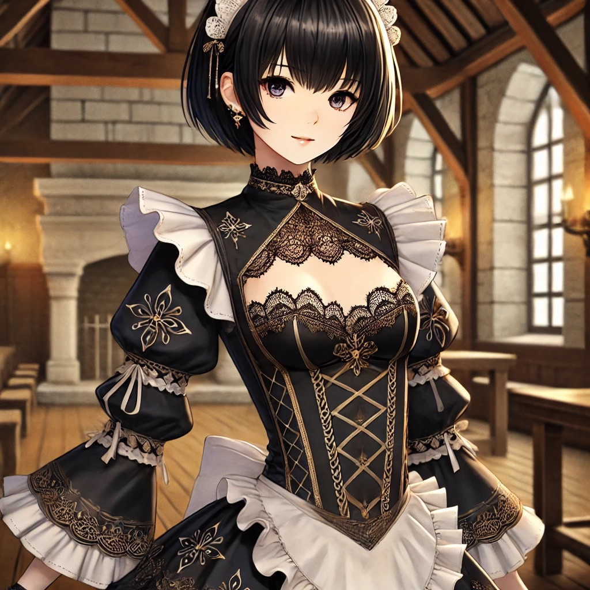

– NEWS –
– Gallery 1 –
– Gallery 2 –
– prompt –
– S P E C –
- 使い方： セッション毎、コピーボックスからコピー Chat GPT へペースト
- 想定： スマホでの雑談 GPT4o以降
- 注意： GPTモデル切り替え時設定崩壊
- 更新日: 2024年2月14日
- memo: News、ギャラリー1〜2、spec 文字 spec周りの装飾、コピーボックスどこにやるか、他もう少しごちゃごちゃさせる。ハンバーガー作り、ヴィンスアイコンでの文字色変更